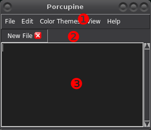

Introduction to Writing Plugins¶
Porcupine is written in Python 3, and it can be extended a lot by writing plugins for it in Python 3. Writing plugins is easy, but this tutorial and Porcupine’s API documentation assume basic tkinter skills.
Where are the plugins?¶
Porcupine searches for plugins in two places. The plugins that come with
Porcupine are installed along with it, but Porcupine also creates a user-wide
plugins folder in its config directory. You can check where it is using
Python:
>>> import porcupine.plugins
>>> print(porcupine.plugins.__path__[0])
/home/akuli/.config/porcupine/plugins
Of course, your plugins are probably not in /home/akuli/.config/porcupine/plugins,
so you need to run the above commands yourself to find out where your plugins
should go. Rest of this tutorial calls this place the plugin directory.
Your plugin directory is empty by default. The plugins that come with Porcupine are installed in a different place:
>>> print(porcupine.plugins.__path__[1])
/home/akuli/.local/lib/python3.7/site-packages/porcupine/plugins
Hello World!¶
Create a hello.py to your plugin directory, and add this code to it:
from tkinter import messagebox
import porcupine
def hello():
messagebox.showinfo("Hello", "Hello World!")
def setup():
porcupine.add_action(hello, 'Hello/Hello World')
Restart Porcupine. You should see a new Hello menu in the menubar with a
Hello World button in it. Clicking that button runs the hello()
function.
Some details:
You can also add actions to menus that Porcupine created, like
porcupine.add_action(hello, 'Run/Hello').Usually plugins are files, but directories with an
__init__.pyin them work as well.File and directory names starting with
_are ignored.Each plugin must define a
setup()function. If your plugin is a package, thesetup()function must be exposed in__init__.py. Porcupine calls this function on startup before opening any tabs.Plugins are imported in an arbitary order, but you can control the order that the setup functions are called in. For example, you could add this code to
hello.py:setup_before = ['tabs2spaces'] setup_after = ['fullscreen']Now our
setup()function is guaranteed to be called before setting up tabs2spaces.py, and fullscreen.py’ssetup()is always called before oursetup().
A Step Back¶
Porcupine’s plugin API is powerful, and many of Porcupine’s features are implemented as plugins. They come with Porcupine (see Where are the plugins? above), but you can also read them on GitHub.
This tutorial is all about writing more plugins, but we’ll start by running Porcupine with no plugins at all just to get an idea of how much can be done with plugins. Open a command prompt or terminal and run this command on it:
porcupine --no-plugins
This will run Porcupine without any plugins, and it is minimal. You can edit files with it, but that’s about it. Plugins can do a lot.
Porcupine’s Widgets¶
Here are the widgets that Porcupine itself creates without any plugins:
- ❶ Main Window
- Everything is inside this widget. Usually it’s a
tkinter.Tkroot window, but it may be aToplevelwidget as well. You can access this widget withporcupine.get_main_window(). - ❷ Menu Bar
- The
porcupine.menubarmodule contains functions for accessing this widget and adding more items to it. However, most of the time it’s easiest to useporcupine.add_action()as shown above. - ❸ Tab Manager
- This widget contains tabs (see below), and a welcome message when there are
no tabs to display. This widget is a
porcupine.tabs.TabManagerand can be accessed withporcupine.get_tab_manager(). - ❹ A Tab
Tabs are
porcupine.tabs.Tabwidgets, and you can access them with the tab manager’stabsattribute. This tab is aporcupine.tabs.FileTabbecause it represents a new file. The text widget and scroll bar are just widgets packed inside the tab. TheNew Filelabel can be accessed with the tab’stop_labelattribute, but it’s not packed inside the tab.Not all tabs need to be file tabs. In fact, you can easily create custom kinds of tabs that contain any Tk widgets. See
porcupine.tabsfor more instructions.
That should be plenty of useful links for you to get started with things.
Virtual Events¶
I added this short section here because not all tkinter users have seen virtual
events before. For example, code like this prints hi:
def print_hi(event):
print("hi")
some_widget.bind('<<PrintHi>>', print_hi)
some_widget.event_generate('<<PrintHi>>')
Note that virtual event names must be between << and >>, just < and
> are not enough. Porcupine generates some virtual events, and you can bind
to them in plugins.
Be careful to spell virtual event names correctly. We didn’t really define the
<<PrintHi>> event anywhere, so if we spell <PrintHi>> correctly in one
place and misspell it like <<PirntHi>> somewhere else we don’t get any
errors. Porcupine’s autocompletion is useful for this.
Potential Pitfalls¶
Most tkinter things work in Porcupine like you would expect them to work, but there are a few things that you should be aware of.
Use add=True¶
When you bind something that another plugin might need to bind as well, use the
add=True argument to bind(). For example, let’s say you have something
like this:
def callback1(event):
print("lol")
def callback2(event):
print("wut")
some_widget.bind('<Button-1>', callback1)
some_widget.bind('<Button-1>', callback2) # now clicking the widget doesn't print lol
This code is bad! Now callback1 doesn’t run at all because binding
callback2 discarded the old binding. Everything would be fine
if we had done this instead:
some_widget.bind('<Control-Return>', callback1, add=True)
some_widget.bind('<Control-Return>', callback2, add=True)
# now they're both bound
Unfortunately tkinter’s unbind() method is stupid and it unbinds
everything, regardless of the second argument passed into it (see
the source code).
If you need to bind and unbind something use
porcupine.utils.temporary_bind(), and let me know that you needed it so I
won’t delete it.
Binding Key Presses¶
If you want to bind a key press globally you should use
porcupine.add_action() in most cases, but you can also bind on the main
window, like this:
def print_hello(event):
print("Hello World!")
return 'break'
def setup():
porcupine.get_main_window().bind('<Control-g>', print_hello, add=True)
Now pressing Ctrl+G in any Porcupine widget runs print_hello.
Note that the binding returns 'break'. This way, if tkinter does something
by default when Ctrl+G is pressed, it will not do it now. You can also
return 'break' from other callbacks to indicate whether other plugins
should handle that event (see Shift-Tab below).
Of course, you can also create non-global bindings normally with the
bind() method of any other widget.
Shift-Tab¶
A common thing to do in plugins is to bind something on the text widget of
every FileTab. The callbacks may
return 'break' to prevent other plugins from handling the same event.
For example, if you’re implementing an autocompleter plugin you might be tempted to write this:
from porcupine import tabs
def on_tab(event):
if we_can_complete():
complete_next_alternative()
def on_shift_tab(event):
if we_can_complete():
complete_previous_alternative()
def on_new_tab(tab):
if isinstance(tab, tabs.FileTab):
tab.bind('<Tab>', on_tab)
tab.bind('<Shift-Tab>', on_tab)
# here's some code that runs on_new_tab() when a new tab is added
This code is also bad! First of all, it’s not using add=True, but
<Shift-Tab> is also limited to Windows and OSX; it doesn’t work at all on
Linux. What’s more, any other plugins that handle Tab presses would get
notified of those tab presses that this plugin was able to autocomplete with
(except that they might not work at all because add=True wasn’t used).
Let’s fix this crap with add=True, return 'break' and
porcupine.utils.bind_tab_key():
from porcupine import tabs, utils
# this plugin handles all tab presses and returns 'break' from them, you
# need this if you bind <Tab>
setup_before = ['tabs2spaces']
def on_tab(event, shift_pressed):
if we_can_complete():
if shift_pressed:
complete_previous_alternative()
else:
complete_next_alternative()
return 'break' # don't notify other plugins about this event
else:
return None # let other plugins do whatever they want to
def on_new_tab(tab):
if isinstance(tab, tabs.FileTab):
utils.bind_tab_key(tab, on_tab)
See porcupine/plugins/indent_block.py for a complete example plugin.